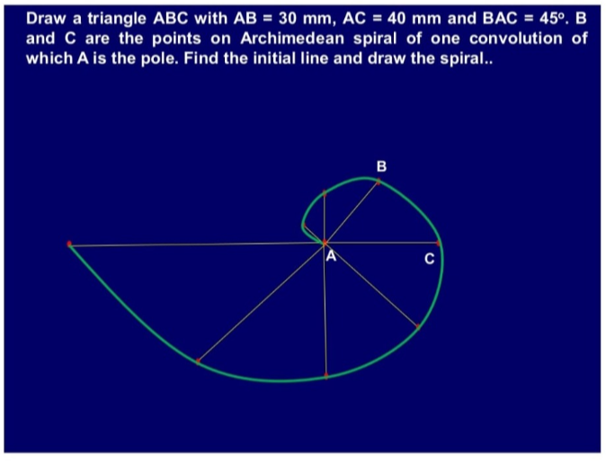

GIVEN DATA:
AB = 30 mm | AC = 40 mm | ∠BAC = 45°
Lead of Spiral = 80 mm (One full convolution)
Interactive Step-by-Step Construction (A is Pole, AB=30mm, AC=40mm)
GIVEN DATA:
AB = 30 mm | AC = 40 mm | ∠BAC = 45°
Lead of Spiral = 80 mm (One full convolution)